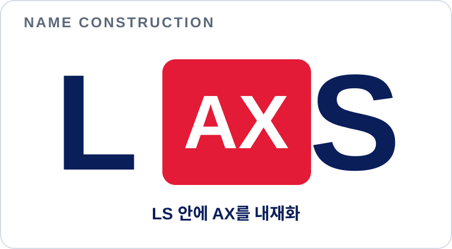

부서의 판단과 전사 실적이 늦게 연결됩니다.
ERP·MES·LPL과 개별 보고서는 업무 사실을 보유하지만, 구매·재고·생산·판매 변화가 손익과 현금에 미치는 영향을 같은 기준선에서 즉시 설명하기 어렵습니다.
EXECUTIVE SUMMARY · LS MnM AX MANAGEMENT PLATFORM
LAXS-M은 부서별 업무 앱·에이전트·시뮬레이션을 같은 전사 데이터와 경영 의미망 위에서 연결하고, 그 결과를 손익·현금·납기 영향과 실행계획으로 전환하는 LS MnM의 AX 플랫폼입니다.

01. EXECUTIVE PROPOSITION
ERP·MES·LPL과 개별 보고서는 업무 사실을 보유하지만, 구매·재고·생산·판매 변화가 손익과 현금에 미치는 영향을 같은 기준선에서 즉시 설명하기 어렵습니다.
현업이 업무 앱과 시뮬레이터를 직접 구성하고, 공통 MDM·RAG·온톨로지·디지털트윈이 결과를 하나의 경영 시나리오로 결합합니다.
AI 답변이 아니라 데이터 판·관계·산식·가정에 결속된 결과를 비교하고, 결정 근거와 실행 책임을 회사의 재사용 자산으로 축적합니다.
02. WHY SIMULATION-BASED AX
“현업의 작은 변화가 전사 손익·현금·납기와 실행 우선순위에 어떤 영향을 만드는가?”
같은 데이터와 기준선으로 답할 수 있어야 합니다.
Palantir와 산업 특화 시뮬레이션 플랫폼 사례의 공통점도 AI 기능 도입이나 데이터 저장 자체가 아니라 운영모델·시뮬레이션·의사결정·실행의 연결에 있습니다.
03. ENTERPRISE OPERATING MODEL

04. CORE PRODUCT CAPABILITIES
현업 요구를 업무 앱의 화면·데이터·규칙·테스트·릴리스로 전환합니다.
업무 에이전트를 추천·구성하고, AI 경영비서가 전사 데이터와 근거를 연결해 경영 질문에 답합니다.
업무별 데이터 계약·입력 항목·규칙·에이전트·계산·관리 화면을 재사용합니다.
인증 데이터 판과 경영 의미망으로 업무 사실·관계·근거·권한을 연결합니다.
부서별 가정과 결과를 조합해 손익·현금·납기·운전자금 영향을 비교합니다.
결과를 근거 있는 안건으로 전환하고 책임·기한·효과와 대상별 보고서를 관리합니다.


05. 90-DAY FIELD ADOPTION
원료매입·생산·판매·전사 통합 업무키트와 회사·조직·권한·기준선을 실제 운영 문맥에 맞춥니다.
최대 10명의 사용자를 대상으로 주간 업무 리듬에서 앱·시뮬레이션·결정·보고를 반복합니다.
판단속도·재작업·사용률·통제·운영비·실적 효과를 기준선과 비교하고 확산안을 확정합니다.
경영·현업·PI/IT·데이터 담당이 범위와 성과를 공동 책임합니다.
제품 코어·업무키트·릴리스·보안·품질·비용·그룹 확산을 전담합니다.
업무모델·가정·결과 검증·채택·효과 측정을 소유합니다.
06. TCO, ROI & COEXISTENCE
제품 기획·개발 자산은 이미 확보되어 있어,
데이터 연계와 현장 적용 외 추가 개발비는 최소화합니다.
* 사용량과 운영 범위 확정 후 상세 재산정합니다.
도입 전 기준선과 90일 실측을 비교하고, 6·12개월 누적 효과로 재검증합니다.
07. MANAGEMENT OUTCOME & EXPANSION

→LAXS = AX embedded in LS · LS의 일과 경영에 AX를 내재화합니다.
LAXS — AX at the core of LS · 현업의 실행과 경영의 판단을 AX로 연결합니다.